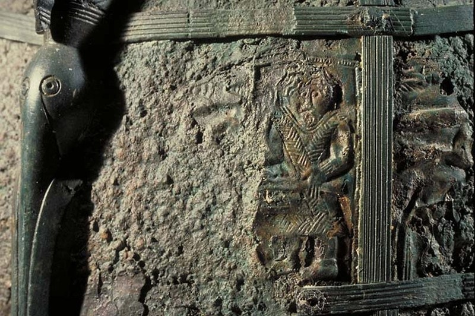
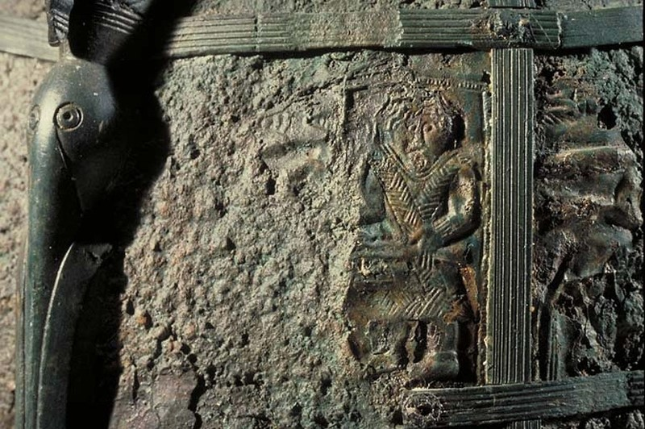

This motif is present on the Va. 7 helmet as two fragments of the fourth plate row positioned frontal on the left and right side.
In the North-Germanic context this motif is known from the Torslunda Patrice A.
Similar motifs are found on the Staffordshire Purse and Pressbleckdisks of Eschwege-Niederhorne Grave 7.
The motif's connection to the Daniel-Motif remains unclear, but it has been suggested as the origin with re-interpration in the Germanic context as a scene from a heroic lay (cf. Böhner 1991).
A few examples of related scenes from literature (see Beck 1968, 241ff. for more details) are as follows:
I. Scenes of "real" hunt ("Das Überwinden von jagdbaren Tieren wird als Indiz für Heldenhaftigkeit betrachtet" Beck 1968).
1. Niebelungenlied Lied 16: Siegfried at the bear-hunt.
2. Gesta Danorum 1.11.: Scioldus binds a bear.
3. Grettis saga Ásmundarsonar (Ch. 21): Grettir achieves great fame by overcoming a bear that eight other men were unable to defeat.
4. Several examples of hunting being a test of prowess in the Fornaldarsögur, e.g. Örvar-Oddr.
II. Scenes of "fictive" hunt (as a cipher for struggle with human opponents)
1. Niebelungenlied (cf. above): Siegfried is killed right after the hunting scene. After Siegfried's death, the real hunt becomes a parable in which the hero is both the hunter and the hunted animal.
2. Helgakviða Hundingsbana ǫnnur 8: parable for the battle with King Hunding
„er ek bjǫrnu tók í Bragalundi / ok ætt ara oddum saddak.“
„when I captured bears in Bragalundr / and sated the family of eagles with spear-points.” (Pettit 2023, p. 438-439)
3. Fornmanna (/Konunga) sögur, Jómsvíkíngasaga: a bóndi challenges Jómsvikings to a bear hunt = fight against jarl Hákon. („væri yðr meiri veiðr at taka björninn, er nú er kominn á bjarn básinn.“)
4. Atlakviða in gr. 11: "Black fanged bears will bite with their teeth" (birnir blacfiallir / bíta preftǫnnom), i.e. the endeavour will not be easy, says Gunnar before the journey to the hostile Hun country.
 
